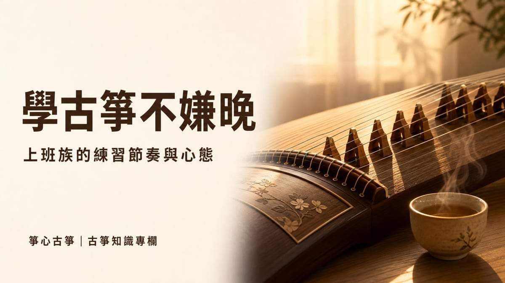

學習入門
學古箏一個月要花多少？學費、樂器與考級費用
學古箏一個月大概要花多少錢？本篇整理市場行情資料，拆解古箏學費、買琴與考級報名費三大項支出，並試算團體班與一對一教學一個⋯

成人學古箏不會太晚。古箏本身的定弦方式對初學者很友善，21 弦古箏通常依五聲音階調好，撥弦就有旋律，不需要像小提琴那樣自己抓音準，下班後就能直接練習，不用先練好「基本功」才聽得出聲音。真正會決定學不學得起來的，不是年紀，而是能不能把練習排進忙碌的生活裡，以及遇到進度卡關時的心態。
這篇文章整理成人、尤其是上班族學古箏時最常出現的疑慮，以及實際可行的練習節奏，幫助還在猶豫的人評估自己適不適合開始。
擔心「年紀大才開始學，會不會學不會」，是許多成人常見的心理負擔，但這種顧慮多半沒有根據。京都大學一項追蹤研究發現，依據〈習樂不嫌晚，七十仍有益〉報導，受試者平均約 73 歲才開始學樂器，持續練習超過三年的人，四年後的語言工作記憶衰退幅度比中途放棄的人輕微，相關腦區的活化範圍也較大。
要特別說明的是，這是一項觀察性研究，樣本也不是以古箏為對象，不能直接拿來當作「學古箏可以維持記憶力」的保證，也不代表每個人的效果都一樣。但它至少說明一件事：晚年、甚至七旬之後開始學樂器，並不會因為「太晚」而完全沒有效果，重點是能不能持續練習。對還在工作、年紀遠不到七十歲的上班族來說，年紀更不該是猶豫的理由。
比起「年紀太大」，上班族更常卡住的是心理層面的擔心，常見的有以下幾種：
這些顧慮多數來自「還沒開始」的想像，實際上課幾次之後，通常會發現沒有想像中困難。
上班族最大的挑戰通常不是「學不會」，而是「排不出時間」。有業者分享，忙碌的學生可以把古箏練習拆解，融入日常零碎時間，而不是只靠週末一次補齊：
| 情境 | 可以怎麼做 |
|---|---|
| 通勤、等紅燈 | 跟著倒數秒數感受拍點，練習節奏感 |
| 午休、搭車 | 把簡譜印出或存在手機裡，先熟悉旋律，到琴前再練手型 |
| 睡前、休息時 | 手腕較緊繃時，可以在枕頭等軟物上練習放鬆手腕的動作 |
這些方法不能取代真正坐在古箏前面練習，但可以讓正式練習時間用得更有效率，也比較容易在忙碌的生活中維持習慣。
沒有一個固定答案，主要看個人目標與可投入的時間，但可以用「上課搭配練習」的架構來評估：
比起糾結「每天該練多久」，更重要的是找到自己能持續做到的頻率，再慢慢往上調整，而不是一開始訂出做不到的目標，練幾次就放棄。
想先自己摸索看看也可以，網路上有不少免費的古箏教學影片，適合還在猶豫要不要長期投入的人先試試手感。不過自學最大的風險，是姿勢與指法方向錯了卻沒有人指出來，等到習慣養成之後才要糾正，反而要花更多時間。
比較務實的做法，是起步階段先找老師，把坐姿、手型與基礎指法的方向建立好，之後要靠自己的零碎時間複習、延伸曲目都會更有效率。怎麼挑老師，可以參考如何選擇適合的古箏老師；如果還在評估學古箏整體要花多少錢，也可以看學古箏一個月要花多少？學費、樂器與考級費用。
成人學古箏不會太晚，真正的門檻是能不能把練習排進生活裡、以及願不願意在起步階段把基本功練對。如果你還在猶豫，新莊箏心古箏音樂教室提供 $350 體驗課，由老師一對一帶你認識古箏、試著彈出第一段旋律，也可以當場聊聊你的工作節奏，一起規劃適合你的練習方式。
不會。古箏採用五聲音階定弦，撥弦就有旋律，入門門檻對成人很友善；只要能維持規律練習，年紀不是決定能不能學會的關鍵因素。
可以先用網路教學影片試試手感，但如果打算長期學，建議起步階段先找老師把坐姿與指法方向建立好，之後再搭配通勤、午休等零碎時間複習，會比較有效率。
依練習頻率而異，沒有固定答案。多數成人學員每週上課一次，課後抽出 15 到 30 分鐘複習，比偶爾練很久更容易累積進度。
不一定。古箏指法需要的是放鬆與熟練度，不是天生靈活度；簡譜以數字表示音高，比五線譜容易入門，熟悉後讀譜速度會提升。
新莊箏心古箏音樂教室提供 $350 體驗課，由老師一對一帶你認識古箏、彈出第一段旋律。
本教室位於新北市新莊區（鄰近新莊體育場、新泰國中），採預約制，為確保上課品質平日不開放參觀；預約成功後將提供詳細交通資訊。